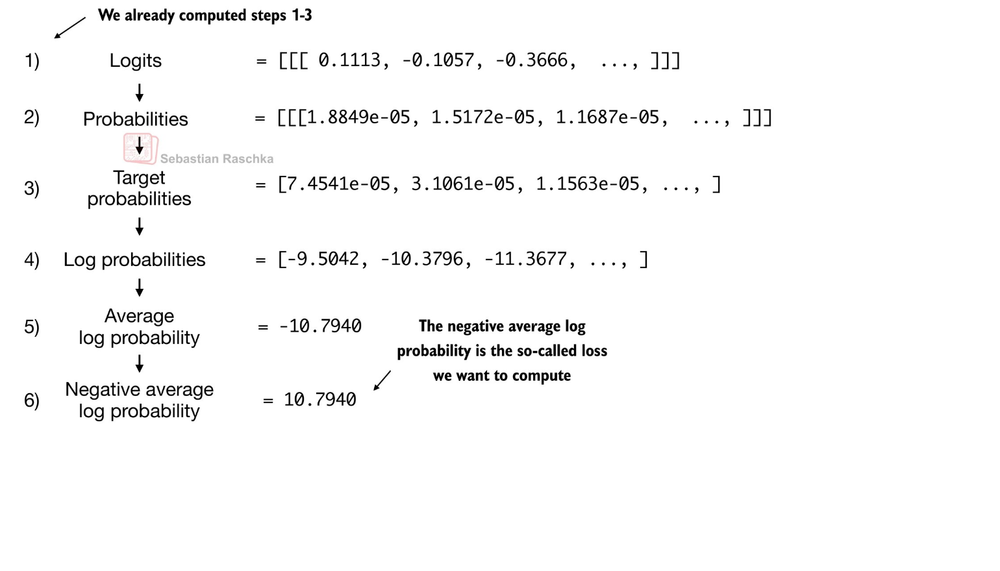
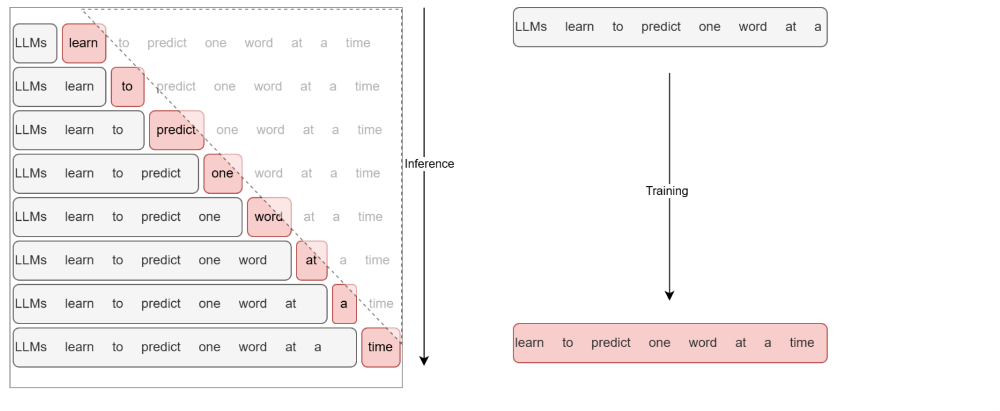

14. 모델 학습 — 정답 확률에서 가중치 갱신까지
언어모델 학습은 정답 토큰에 부여한 확률을 높이도록 가중치를 조정한다. 손실 계산 → 기울기 계산 → 파라미터 갱신은 서로 다른 단계다. 생성과 같은 다음 토큰 문제를 풀지만, 학습 중에는 정답 문맥이 이미 주어져 여러 위치의 예측을 함께 계산할 수 있다.
학습 목표는 CE를 손계산하고 학습·검증·시험 데이터를 구분하며, batch와 optimizer step을 세는 것이다. 1~4절은 기본이고 Adam의 수식은 보충 확인용이다.
시각적으로 확인할 핵심
확률에서 손실까지 내려간 뒤, 미분 계산과 가중치 변경을 따로 확인하세요.

확률 합이 아니라 로그 손실의 평균이다. backward와 optimizer update는 별개 단계다.
1. 같은 자료로 공부하고 시험 보면 생기는 문제
train은 가중치를 맞추는 데이터, validation은 설정·중단 시점 등을 선택하는 데이터, test는 선택을 마친 뒤 최종 평가하는 데이터다. 같은 문서의 겹치는 조각을 서로 다른 분할에 넣으면 내용을 사실상 미리 본 누수가 생길 수 있다. 문서·사용자·시간 등 독립 단위를 고려해 나눈다. validation은 과적합을 발견하고 대응할 근거를 주며, 분리 자체가 과적합을 자동 방지하지는 않는다. 시험 데이터를 계속 보고 설정을 고르면 더 이상 독립 시험이 아니다.
2. 손실은 예측 대상에 맞게 고른다
| 대상 | 출력과 정답 | 손실의 의미 |
|---|---|---|
| 실수 회귀 | 예측값·실제값 | MSE: 제곱 오차 평균 |
| 이진 분류 | 양성 logit·0/1 | BCE: 정답 사건의 음의 로그확률 |
| 다중 토큰 분류 | V개 logits·정답 ID | CE: 정답 후보의 음의 로그확률 |
토큰 ID 3과 4가 숫자로 가깝다고 의미가 가까운 것은 아니다. ID 차이의 MSE로 next-token 문제를 풀지 않는다. CE는 자연로그를 사용하고 유효한 정답 위치 수 N으로 평균낸다.
설명용으로 정답 확률이 0.5와 0.25인 두 위치를 생각하자. 첫 손실은 -ln(0.5)=0.693147, 둘째는 -ln(0.25)=1.386294, 평균은 1.039721이다. 확률들을 단순히 더하는 것이 아니다. perplexity는 exp(L)≈2.828427이다. 평균 대상·토큰화·데이터가 다르면 PPL 숫자만으로 모델 우열을 비교하지 않는다. 정답 확률이 0이면 이론적 손실은 무한대이므로 실제 구현에서는 logits에서 log-softmax를 안정적으로 계산한다.
입력 [7,2,9], 정답 [2,9,5]라면 첫 위치는 7을 보고 2를 예측한다. causal mask가 뒤의 정답을 직접 보지 못하게 한다. [B,T,V] logits를 [B*T,V], 정답 [B,T]를 [B*T]로 펴도 위치 대응은 보존해야 한다. API가 내부에서 정답을 shift한다면 밖에서 다시 shift하지 않는다. padding 정답은 평균의 분모에서도 제외한다.
3. 손실이 계산되어도 가중치는 저절로 바뀌지 않는다
배치 → forward → logits → loss → backward → optimizer update
↑ ↓
다음 배치 전에 gradient 초기화
위는 의사 흐름이다. 보통 이전 기울기를 초기화한 뒤 forward/backward/step을 진행한다. backward는 각 가중치가 손실에 미치는 미분을 계산하고 optimizer가 그 값을 이용해 갱신한다. SGD는 w_new=w_old-ηg다. w=2, g=0.3, η=0.1이면 1.97이다. η를 너무 크게 하면 손실이 증가하거나 발산할 수 있다. model.eval()은 Dropout 등 모듈 동작을 바꾸고, no_grad()는 자동미분 기록을 끈다. 검증 시 둘을 구별해 사용한다.
Adam은 기울기 g의 지수이동평균 m과 제곱 기울기의 지수이동평균 v를 유지한다. 보충 수식은 m_t=β1 m_(t-1)+(1-β1)g_t, v_t=β2 v_(t-1)+(1-β2)g_t²이다. 초기 0의 편향을 보정한 mhat=m_t/(1-β1^t), vhat=v_t/(1-β2^t)로 w←w-η mhat/(sqrt(vhat)+ε)를 계산한다. ‘방향’과 ‘보폭’ 비유는 직관이며 최적 손실·일반화를 보장하지 않는다.
원문 해석 주의: 169쪽의 ‘고차원에서는 local minimum이 발생하지 않음’은 일반 명제로 사용하지 않는다. 고차원에도 국소 최소가 존재할 수 있으며 평탄한 영역·안장점·기울기 문제를 구분해야 한다. 173쪽의 작은/큰 배치 효과 역시 학습률·데이터·총 학습량·하드웨어 조건에 의존하므로 단정하지 않는다.
4. Epoch·batch·step과 생성의 차이
데이터 1,000개, batch size 100, 마지막 배치 버림 없음, 배치마다 한 번 갱신이면 한 epoch은 10 optimizer step이다. batch size 128이면 ceil(1000/128)=8배치이며 마지막 104개를 포함한다. drop_last=True면 7배치, 896개만 사용한다. gradient accumulation으로 두 배치마다 갱신하면 배치 수와 optimizer step 수는 달라지므로 마지막 나머지를 갱신할지도 명시해야 한다.
학습에서는 teacher forcing으로 정답 이전 토큰을 각 위치에 공급해 한 번의 causal forward로 여러 next-token 손실을 계산한다. 생성에서는 다음 입력 토큰을 아직 모르므로 선택한 토큰을 붙여 반복한다. 조건부 예측의 방향은 같지만, 학습 문맥은 정답이고 생성 문맥은 자기 예측이므로 두 전체 과정이 완전히 동일하지는 않다. 원문 174쪽의 ‘동일’은 미래를 가리는 조건부 예측 구조로 한정해 읽는다.
5. 이해 확인
- 두 정답 확률을 0.5,0.5로 바꾸면 CE와 PPL은?
- 데이터 10개, batch size 4에서 마지막을 버릴 때와 유지할 때 배치 수는?
- validation loss가 오르는데 train loss만 내려간다면 무엇을 의심하는가?
- backward만 호출한 다음 가중치를 비교하면 왜 그대로일 수 있는가?
해설과 돌아갈 위치
- 평균 CE=0.693147, PPL=2. 둘째 정답의 확률이 높아져 손실이 줄었다. 2절.
- 버리면 2, 유지하면 3. 한 배치당 갱신 가정 아래 step 수도 각각 2·3이다. 4절.
- 과적합, 분할 차이 등을 살핀다. test를 조정용으로 쓰지 않는다. 1절.
- backward는 기울기를 계산할 뿐이다. 실제 optimizer update가 필요하다. 3절.
원문 175쪽 Chapter 5는 실습 안내 페이지다. 이 장의 수치는 새 설명용 예시이며 원 노트북 실행 결과가 아니다. 다음 15장은 사전학습 모델을 특정 작업에 맞추는 방법이다.
6. 사전학습의 위치와 정답 이동
정의와 목적. 사전학습은 작업별 조정 전에 넓은 텍스트에서 다음 토큰 예측 규칙을 맞추는 과정이다. 정답은 별도 사람이 모든 토큰에 라벨을 붙이지 않아도 원문 텍스트에서 얻는다. 159쪽의 지도는 모델 구성→사전학습 또는 학습된 가중치 로드→분류·지시 데이터로 미세튜닝이라는 흐름이다. 이 장은 가운데 기본 모델의 학습 루프에 집중한다.
한 문서의 토큰이 [7,2,9,5]이면 입력 X=[7,2,9], 정답 Y=[2,9,5]로 한 칸 이동시킨다. B=1,T=3,V=11일 때 모델 출력 [1,3,11]의 각 행을 다음처럼 대응한다.
| 위치 t | 모델이 볼 수 있는 문맥 | 정답 ID | 손실에 고를 좌표 |
|---|---|---|---|
| 0 | [7] | 2 | p[0,0,2] |
| 1 | [7,2] | 9 | p[0,1,9] |
| 2 | [7,2,9] | 5 | p[0,2,5] |
causal mask는 위치 0이 입력 배열 뒤의 2·9를 미리 보지 못하게 한다. shift는 어느 출력을 어느 정답과 비교할지 정하는 작업이고 mask는 모델이 어느 입력을 볼지 제한하는 작업이다. 둘 중 하나를 생략하면 정답을 그대로 베끼거나 잘못된 위치를 학습할 수 있다. 라이브러리가 내부 shift를 제공하는 경우 데이터 쪽에서 다시 이동하지 않는다.
166쪽의 every→effort, effort→moves, moves→you 그림은 argmax 인덱스를 문자로 복원하는 예다. 손실 계산에서 필요한 것은 가장 큰 후보가 아니라 정답 후보의 확률이다. 아래 167쪽 화살표의 target probabilities 단계를 찾는다.

그림에는 전체 값이 생략되어 있으므로 마지막 10.7940을 표시된 세 항만으로 검산할 수 없다. 본문의 0.5·0.25 예시는 모든 입력을 제공해 직접 검산하도록 만든 보충이다. padding을 제외할 때는 손실의 합과 분모 모두에서 제외한다. 모두 padding인 배치는 유효 위치 N=0이므로 평균을 계산하지 않고 건너뛰는 등의 정책이 필요하다.
174쪽에서 오른쪽 학습의 정답 행이 한 칸 이동한 것을 확인한다.

왼쪽에서는 앞선 선택이 다음 입력이므로 순차 생성이 필요하다. 오른쪽에서는 전체 정답 문장을 이미 알고 있어 causal mask 아래 모든 위치 손실을 병렬로 계산한다. ‘두 과정이 동일’하다는 원문 문장은 미래를 볼 수 없는 조건부 예측 구조를 공유한다는 범위로 한정한다.
7. 외부 실행 없이 해보는 사전학습 점검
활동 A: 손실 선택. 163쪽의 실제값 [10,20,30,40,50]과 예측값 [11,19,30,43,47]에서 MSE를 계산한다. 제곱 오차 합은 20, 평균은 4다. 164쪽의 이진 정답 [1,0,1,1,0], 양성 확률 [0.99,0.11,0.5,0.05,0.75]에서는 정답 사건 확률이 [0.99,0.89,0.5,0.05,0.25]다. 자연로그 손실 합은 5.201758, 평균은 1.040352이다. 합과 평균의 기준을 먼저 확인한다.
활동 B: next-token 손실. 입력 [7,2,9], 정답 [2,9,5]에 대한 정답 확률이 [0.5,0.25,0.5]이면 CE=0.924196, PPL=2.519842다. 두 번째 정답만 0.5로 높이면 CE=0.693147, PPL=2로 낮아진다. 숫자는 설명용 분포이며 원 노트북의 출력값이 아니다.
활동 C: 갱신 횟수. 데이터 10개, batch 4, 나머지 유지이면 배치는 4·4·2로 세 개다. 두 microbatch마다 gradient accumulation을 하고 마지막 잔여도 갱신하면 optimizer step은 두 번이다. 마지막 잔여를 버리면 한 번이므로 정책을 명시해야 한다. 서로 크기가 다른 배치의 평균 손실을 단순 평균하면 토큰별 평균과 달라질 수 있어 유효 토큰 수로 가중해야 한다.
활동 D: Adam 첫 단계. g=0.3, β₁=0.9, β₂=0.999이면 m=0.03, v=0.00009다. 첫 step 편향 보정으로 m̂=0.3, v̂=0.09가 되고, η=0.1, ε=1e-8이면 w=2에서 약 1.9000000033으로 이동한다. 이동평균과 편향 보정은 Adam 원논문의 알고리즘을 따른다. 원문의 ‘방향·보폭’은 이 수식의 직관이다.
175쪽의 원 사전학습 노트북은 추가 실행 경로다. 위 작은 활동은 내부에서 완결되며 원 노트북 전체 실행과 재학습 성능 평가는 수행하지 않았다.
8. 원문 주장에 필요한 조건과 정정
- 160~161쪽: 검증 데이터는 과적합 탐지와 설정 선택에 쓰인다. 분리해 놓는 것만으로 과적합이 방지되지는 않는다. test를 반복 선택에 사용하면 독립 평가 기능이 약해진다.
- 165쪽: ‘정답 확률 합’은 CE의 정의가 아니다. 각 위치의 정답 확률을 골라 음의 로그 평균을 계산한다. 같은 위치에서 모든 어휘 후보의 확률 합만 1이어야 한다.
- 166쪽: 그림 첫 확률 행의 합은 0.98이다. 원문 근삿값을 정확한 분포로 간주한 수치 결론은 피한다.
- 168쪽: 0<학습률<1은 모든 손실의 보편 수렴 조건이 아니다. 가령 L(w)=100w², w=1, η=0.1이면 새 값 -19가 되어 손실이 커진다.
- 169쪽: 고차원에도 L(w)=Σwᵢ²의 원점처럼 최소가 존재한다. 안장점·평탄 영역과 국소 최소를 구별한다. 관련 Dauphin 외 원논문은 고차원 비볼록 최적화에서 안장점의 어려움을 논한다. 원문의 무조건적 ‘발생하지 않음’을 뒷받침하는 근거로 쓰지 않는다.
- 173쪽: 같은 global step에서 batch가 다르면 총 처리 데이터량도 달라질 수 있다. 원 그래프의 실험 조건이 제공되지 않아 일반화·실행 시간의 인과적 우열은 미확인이다.
페이지별 복습
158 표지 · 159 전체 과정 · 160 분할 · 161 검증 · 162 학습 순환 · 163 MSE · 164 BCE · 165 정답 확률 · 166 인덱스 · 167 CE · 168 경사하강 · 169 지형 · 170 Adam 직관 · 171 Adam 식 · 172 학습 단위 · 173 배치 비교 · 174 학습·추론 · 175 실습